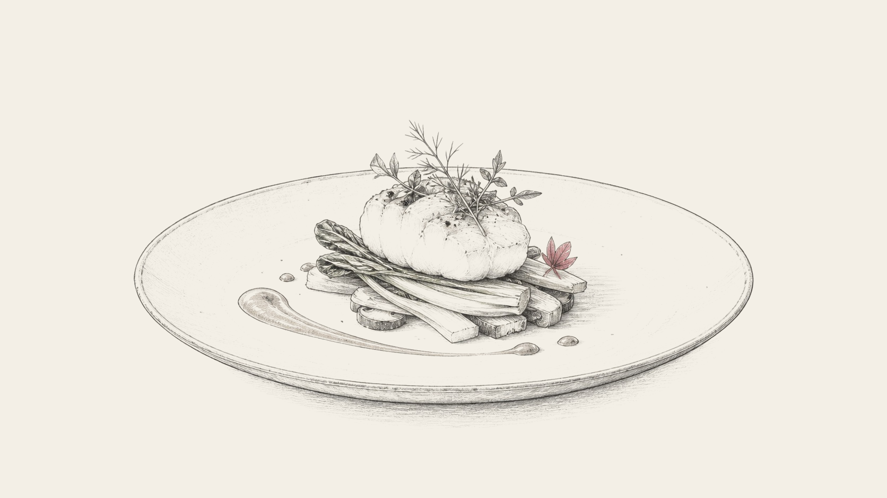

장르의 매력
식당을 좋아하게 되는 이유가 사람마다 다르듯, 클래식도 각자의 기준과 상황 속에서 다르게 들립니다.
게시일 2026-08-01
우리가 식당을 방문해서 좋은 식당이라고 느끼는 이유는 저마다 다릅니다. 입맛에 잘 맞아서일 수도 있고, 왜 이런 구성을 했는지 느껴져서일 수도 있습니다. 다른 곳에서는 쉽게 만나기 어려운 특별함이 있거나, 가게와 사람에게 친밀감이 느껴지거나, 그 요리 자체를 좋아해서일 수도 있습니다.
그리고 식당에 방문하는 이유와 상황에 따라, 같은 사람이라도 식당을 평가하는 우선순위는 달라집니다. 어떤 날에는 익숙한 맛과 잔잔함을 기대하고, 어떤 날에는 믿고 찾는 가게에서 새로운 맛을 기대하기도 합니다.

클래식을 들을 때도 비슷합니다. 우리는 여러 기준으로 연주를 감상할 수 있습니다. 귀를 끄는 소리인지, 음악이 어떻게 구성되어 있는지 잘 드러나는지, 쉽게 해내기 어려운 연주인지, 연주자에게 마음이 가는지, 작품과 작곡가에 대한 이해가 깊게 느껴지는지 같은 기준들입니다.
마찬가지로 음악을 듣는 이유와 상황에 따라, 같은 사람이라도 연주를 평가하는 우선순위는 달라집니다. 유명 연주자의 화려한 해석을 기대하기도 하고, 풋풋한 연주자의 꾸밈없는 연주에 마음이 움직이기도 합니다. 또는 마음을 끌었던 곡은 누가 어떻게 연주하더라도 잠시 발길을 멈추게 만들기도 합니다.
만약 어떤 연주회가 어렵게 느껴졌다면, 그 연주가 가진 장점이 지금의 기대와 잘 맞지 않았을 수 있습니다.